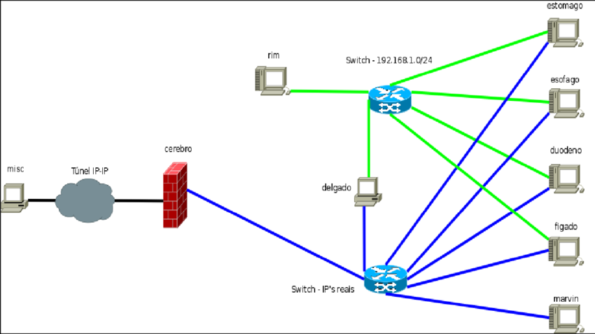

Estrutura e funcionamento da Internet
 A internet é uma ferramenta poderosa e às vezes parece até mágica. Ela já está totalmente integrada com o nosso cotidiano e se tornou uma aliada em vários aspectos da nossa vida: trabalho, estudos, lazer, relacionamentos. Mesmo assim, muitas pessoas ainda não sabem como a internet funciona.Para começar, você precisa entender que internet e World Wide Web (WWW) não são a mesma coisa. A internet é uma estrutura física, enquanto a WWW é um protocolo que usa essa estrutura física para a troca de dados. O que é a internet, afinal? É uma rede de computadores. Ela é constituída por canais de comunicação com ou sem fio e elementos de comunicação. Em outras palavras, é a estrutura que possibilita que computadores e outros dispositivos troquem dados entre si. Enquanto isso, a WWW é o protocolo mais utilizado para a troca de dados atualmente, mas não é o único. Aliás, a internet existe desde os anos 1960, mas a WWW só foi formalizada em 1990.
Voltar